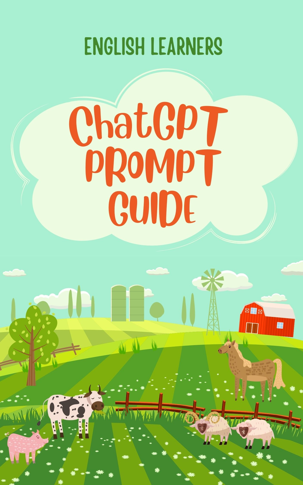

ChatGPT Prompt
Guide for English Learners
Use AI to Practice Speaking, Listening, and Reading —
Anytime, Anywhere
This guide helps you turn ChatGPT (or any AI
assistant) into your personal English tutor. You don’t need perfect
grammar. You need daily use — and these prompts
give you exactly that.
Whether you’re speaking alone, reading aloud, or listening for
fluency, this guide shows you what to say and
how to practice with ChatGPT — every day.
How to Use This Guide
Each prompt category below is designed for real English growth.
To use it:
- Open ChatGPT
- Copy & paste the prompt
- Follow ChatGPT’s reply and keep the conversation
going
- Repeat the same prompt with new topics each
time
You can practice:
- Speaking (reply out loud, ask follow-up questions)
- Listening (ask ChatGPT to read things aloud with voice or
slowly)
- Reading (read texts it gives you, ask meaning or
pronunciation)
Speaking Practice Prompts
These help you start conversations with ChatGPT and practice
fluency.
Simple Daily Life
- Ask me 5 questions about my morning routine. Wait after each
one.
- Let’s pretend we’re meeting at a café. You ask the first
question.
- I want to practice describing people. Ask me to describe 3
friends.
- Ask me about my favorite food and why I like it.
- Let’s talk about my hobbies. Ask me 3 questions about what I
enjoy doing.
- Ask me about my family and where I’m from.
- Let’s discuss my daily schedule. Ask me about my typical
day.
- Ask me about my goals and dreams for the future.
- Let’s talk about my hometown. Ask me 4 questions about where I
grew up.
- Ask me about my favorite movies and why I like them.
Work & Study
- Pretend to be my coworker. Let’s talk about a project
deadline.
- You’re my teacher. Ask how my homework is going.
- You’re my manager. Ask me for a progress update.
- Let’s roleplay a job interview. You’re the interviewer.
- Ask me about my career goals and what I want to achieve.
- Pretend to be my study partner. Let’s discuss my exam
preparation.
- You’re my mentor. Ask me about my professional development.
- Let’s talk about workplace challenges. Ask me about difficult
situations.
- Ask me about my skills and what I’m good at.
- Let’s discuss my work-life balance. Ask me about my
routine.
- Ask me about my favorite apps and how I use them.
- Let’s talk about social media. Ask me about my online
habits.
- Ask me about my experience with new technology.
- Let’s discuss online shopping. Ask me about my preferences.
- Ask me about my favorite websites and why I visit them.
- Let’s talk about digital privacy. Ask me about my concerns.
- Ask me about my experience with video calls and meetings.
- Let’s discuss online learning. Ask me about my experience.
- Ask me about my favorite gadgets and why I like them.
- Let’s talk about internet safety. Ask me about my
practices.
Health & Fitness
- Ask me about my exercise routine and fitness goals.
- Let’s talk about healthy eating. Ask me about my diet.
- Ask me about my sleep habits and how I feel in the morning.
- Let’s discuss stress management. Ask me about my coping
strategies.
- Ask me about my experience with meditation or relaxation.
- Let’s talk about mental health. Ask me about my well-being.
- Ask me about my experience with doctors and medical care.
- Let’s discuss healthy lifestyle choices. Ask me about my
habits.
- Ask me about my favorite sports or physical activities.
- Let’s talk about work-life balance and self-care.
Travel & Culture
- Ask me about my travel experiences and favorite
destinations.
- Let’s talk about different cultures. Ask me about my
experiences.
- Ask me about my experience with different cuisines.
- Let’s discuss language learning. Ask me about my journey.
- Ask me about my experience with cultural festivals and
celebrations.
- Let’s talk about international friends. Ask me about my
connections.
- Ask me about my experience with different customs and
traditions.
- Let’s discuss cultural differences. Ask me about my
observations.
- Ask me about my dream travel destinations and why.
- Let’s talk about cultural exchange programs and
experiences.
Roleplay Situations
- Act like a waiter. I’ll order a meal.
- You’re a tourist. Ask me how to get to the train station.
- Pretend to be a shop assistant. I want to return something.
- You’re a doctor. I’m coming for a checkup.
- Act like a hotel receptionist. I need to check in.
- You’re a taxi driver. Ask me where I want to go.
- Pretend to be a bank teller. I need to open an account.
- You’re a travel agent. I want to plan a vacation.
- Act like a hairdresser. I want to get my hair cut.
- You’re a librarian. I need help finding a book.
Listening Practice Prompts
Use these to ask ChatGPT to speak to you, tell stories, or
simulate audio-based situations.
(Use voice-read mode or read aloud slowly and ask comprehension
questions.)
Short Stories & Dialogue
- Tell me a short story (5–6 sentences) about someone going to the
market.
- Read a conversation between two people at the airport. Then ask
me questions.
- Tell me a story about a person learning to cook for the first
time.
- Read a dialogue between a teacher and student about
homework.
- Tell me a story about someone making new friends at work.
- Read a conversation between neighbors discussing the
weather.
- Tell me a story about a family planning a weekend trip.
- Read a dialogue between a customer and shop assistant.
- Tell me a story about someone overcoming a challenge.
- Read a conversation between friends making weekend plans.
Business & Professional
- Tell me a story about a successful business meeting.
- Read a conversation between colleagues discussing a
project.
- Tell me a story about someone starting their own business.
- Read a dialogue between a manager and employee about goals.
- Tell me a story about a challenging work situation.
- Read a conversation about workplace diversity and
inclusion.
- Tell me a story about someone networking at a conference.
- Read a dialogue about work-life balance in the office.
- Tell me a story about a team working together on a
deadline.
- Read a conversation about professional development and
training.
- Tell me a story about someone discovering a new hobby.
- Read a conversation about favorite movies and TV shows.
- Tell me a story about attending a live concert or event.
- Read a dialogue about social media and its impact.
- Tell me a story about someone learning to play an
instrument.
- Read a conversation about books and reading preferences.
- Tell me a story about a memorable birthday celebration.
- Read a dialogue about gaming and online entertainment.
- Tell me a story about someone trying a new form of art.
- Read a conversation about music and favorite artists.
Science & Technology
- Tell me a story about someone learning to use new
technology.
- Read a conversation about artificial intelligence and its
future.
- Tell me a story about a scientific discovery or innovation.
- Read a dialogue about renewable energy and sustainability.
- Tell me a story about someone working in a tech startup.
- Read a conversation about space exploration and astronomy.
- Tell me a story about medical advances and healthcare.
- Read a dialogue about cybersecurity and online safety.
- Tell me a story about someone studying environmental
science.
- Read a conversation about robotics and automation.
Listening for Keywords
- Say 5 short sentences with the word ‘buy’. I will repeat
them.
- Say 3 sentences slowly. I’ll try to repeat them exactly.
- Say 4 sentences with the word ‘work’. I’ll repeat each one.
- Say 5 sentences with the word ‘like’. I’ll try to copy your
pronunciation.
- Say 3 sentences with the word ‘time’. I’ll repeat them
back.
- Say 4 sentences with the word ‘go’. I’ll practice saying
them.
- Say 5 sentences with the word ‘make’. I’ll repeat them
exactly.
- Say 3 sentences with the word ‘think’. I’ll copy your
intonation.
- Say 4 sentences with the word ‘know’. I’ll practice
pronunciation.
- Say 5 sentences with the word ‘see’. I’ll repeat them
slowly.
Shadowing
- Say one sentence. Then say it again slowly so I can shadow
it.
- Let’s do sentence shadowing. One sentence at a time. Pause after
each.
- Say a sentence about daily routine. I’ll shadow your
pronunciation.
- Say a sentence about food. I’ll repeat it exactly as you say
it.
- Say a sentence about travel. I’ll shadow your intonation.
- Say a sentence about work. I’ll copy your rhythm and
stress.
- Say a sentence about family. I’ll repeat it with your
accent.
- Say a sentence about hobbies. I’ll shadow your
pronunciation.
- Say a sentence about weather. I’ll copy your speaking
style.
- Say a sentence about shopping. I’ll repeat it exactly.
Reading Practice Prompts
Copy these to get short reading material you can use to read
aloud and understand.
Paragraph Reading
- Give me a short paragraph (3–4 lines) about someone’s daily
routine. I will read it aloud.
- Show me a small news story for A2-level learners to read
aloud.
- Give me a paragraph about cooking a simple meal. I’ll read it
slowly.
- Show me a short article about healthy eating habits.
- Give me a paragraph about traveling to a new city. I’ll practice
reading it.
- Show me a brief description of a famous landmark.
- Give me a paragraph about starting a new job. I’ll read it
aloud.
- Show me a short text about environmental protection.
- Give me a paragraph about learning a new skill. I’ll practice
pronunciation.
- Show me a brief article about technology in daily life.
Academic & Educational
- Give me a paragraph about the history of a famous
invention.
- Show me a short text about different learning styles and
methods.
- Give me a paragraph about the importance of education in
society.
- Show me a brief article about famous scientists and their
discoveries.
- Give me a paragraph about the benefits of studying abroad.
- Show me a short text about different academic subjects and
careers.
- Give me a paragraph about the evolution of technology in
education.
- Show me a brief article about research methods and academic
writing.
- Give me a paragraph about the role of libraries in
learning.
- Show me a short text about online education and digital
learning.
Lifestyle & Personal
Development
- Give me a paragraph about building good habits and
routines.
- Show me a short text about mindfulness and mental
well-being.
- Give me a paragraph about setting and achieving personal
goals.
- Show me a brief article about time management strategies.
- Give me a paragraph about building confidence and
self-esteem.
- Show me a short text about networking and building
relationships.
- Give me a paragraph about overcoming fears and challenges.
- Show me a brief article about creativity and innovation.
- Give me a paragraph about financial literacy and money
management.
- Show me a short text about leadership skills and qualities.
Current Events & News
- Give me a paragraph about a recent technological
advancement.
- Show me a short news article about environmental
conservation.
- Give me a paragraph about a cultural event or festival.
- Show me a brief article about global health and wellness
trends.
- Give me a paragraph about economic changes and their
impact.
- Show me a short text about social media trends and their
effects.
- Give me a paragraph about sports events and their
significance.
- Show me a brief article about political developments and
policies.
- Give me a paragraph about entertainment industry news.
- Show me a short text about scientific discoveries and
research.
Vocabulary Focus
- Give me a paragraph using 5 A1-level verbs. Then help me
understand each.
- Show me a reading with 3 new words. After I read, explain
them.
- Give me a text with 4 common adjectives. Help me learn their
meanings.
- Show me a paragraph with 3 business vocabulary words. Explain
each one.
- Give me a reading with 5 everyday nouns. Help me understand
them.
- Show me a text with 4 phrasal verbs. Explain what each
means.
- Give me a paragraph with 3 academic words. Help me learn
them.
- Show me a reading with 5 descriptive words. Explain their
meanings.
- Give me a text with 4 travel vocabulary words. Help me
understand.
- Show me a paragraph with 3 emotion words. Explain each one.
Functional Reading
- Show me a simple email from a teacher to a student.
- Give me a text message conversation between two friends making
plans.
- Show me a restaurant menu with prices and descriptions.
- Give me a weather forecast for the week.
- Show me a job advertisement for an office position.
- Give me a train schedule with times and destinations.
- Show me a recipe with ingredients and instructions.
- Give me a hotel booking confirmation email.
- Show me a shopping list with items and quantities.
- Give me a doctor’s appointment reminder message.
Grammar Fix Prompts
These help you correct mistakes and learn naturally.
- I’ll write 3 sentences. Please correct them and explain.
- Here’s my sentence: ‘He don’t like it.’ Please fix it and show 2
examples.
- Check my sentence: ‘I am agree.’ Correct me and ask a
follow-up.
Reusable Prompts for
Habit Practice
These can be used every day by just changing the topic:
- Ask me 3 questions about any topic. Help me answer them
better.
- Let’s roleplay a real situation — today you choose.
- Give me one listening, one speaking, and one reading task for
today.
- Correct me when I make a mistake while speaking. Let’s practice
a conversation.
Want to Practice for a
Year?
Join the Afrin English Speaking Challenge at AfrinEnglish.com
Use these prompts in your 365-day habit, or pair with:
- Speaking Journal Templates
- Daily Tracker Pages
- Mini eBooks for Real Conversations
Quick Start Guide
Week 1: Start with 10 minutes daily
- Day 1-2: Speaking prompts
- Day 3-4: Listening prompts
- Day 5-6: Reading prompts
- Day 7: Grammar fix prompts
Week 2: Increase to 15 minutes daily
- Mix all types of prompts
- Try roleplay situations
- Start tracking your progress
Week 3+: Build your habit
- 20+ minutes daily
- Use reusable prompts
- Practice with real topics you care about
Pro Tips
- Be consistent - 10 minutes daily beats 2 hours once a week
- Speak out loud - even when alone, practice pronunciation
- Ask follow-ups - keep conversations going naturally
- Use real topics - practice with things you actually want to talk
about
- Don’t worry about mistakes - focus on communication, not
perfection
Ready to Start?
Pick one prompt from this guide and try it right now. Remember:
The best time to start is now, and the best way to improve is to
practice every day.
Your First Practice: Choose one prompt from the Speaking Practice
section and try it with ChatGPT right now. Don’t wait for the
perfect moment — start today!